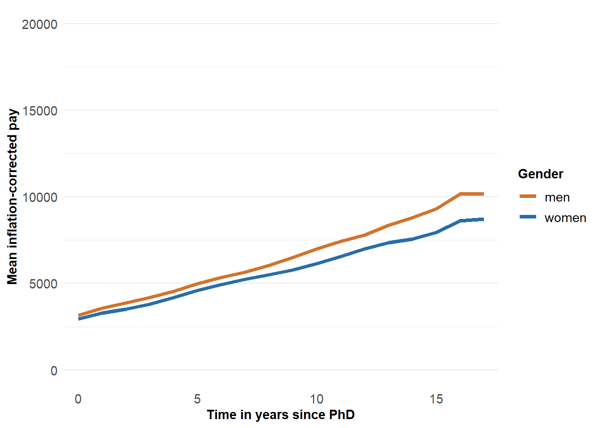
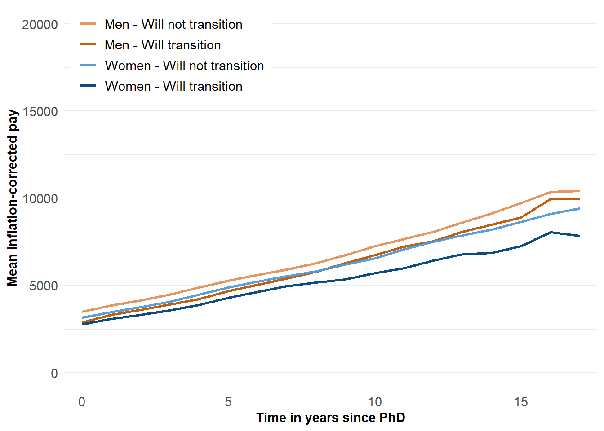
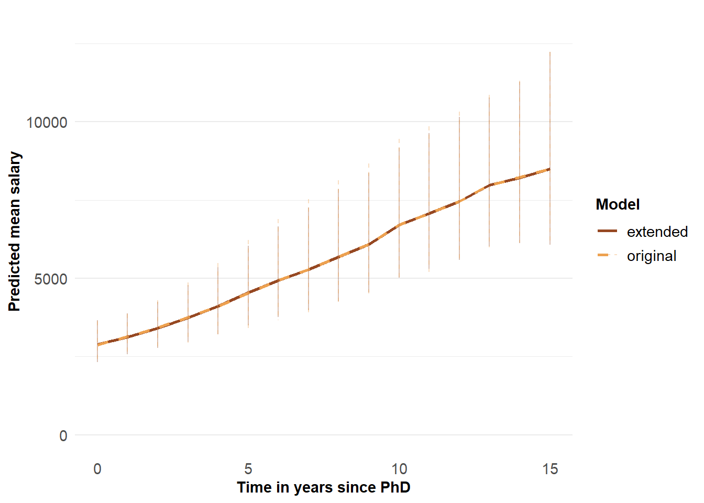
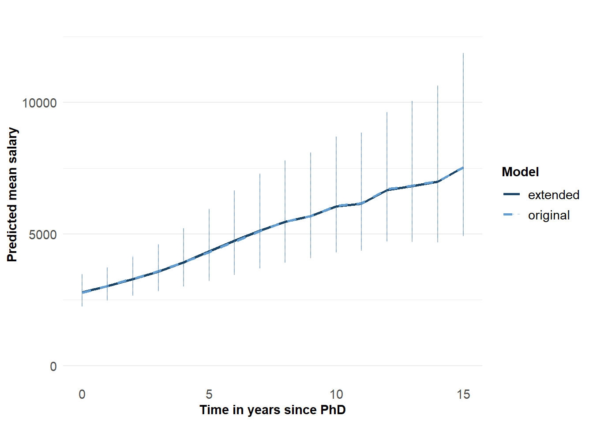
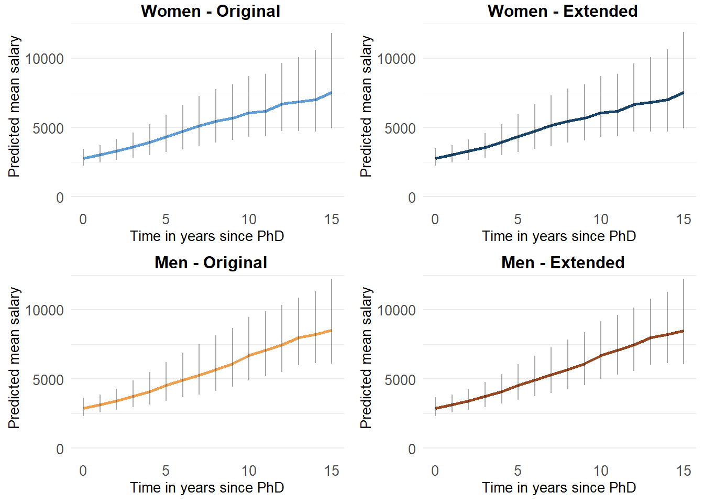

rm(list=ls())library(tidyverse)
library(ggplot2)
library(ggpubr)
library()load(file="H:/processed_data/df_mmfc.rda")
df_mmfc$t2 <- df_mmfc$t^2
df_mmfc$t3 <- df_mmfc$t^3
df_mmfc$t4 <- df_mmfc$t^4
df_mmfc$t5 <- df_mmfc$t^5
df_mmfc$t6 <- df_mmfc$t^6
levels(as.factor(df_mmfc$phd_disci))
summary(as.factor(df_mmfc$phd_disci))
df_mmfc$phd_disci <- factor(df_mmfc$phd_disci, levels=c("Health sciences", "Social sciences", "Natural sciences and mathematics", "Engineering", "Humanities", "Agriculture and animal sciences"))
df_mmfc <- df_mmfc %>%
mutate(gender = ifelse(gender==1, "men", "women"))
df_mmfc$gender <- factor(df_mmfc$gender, levels=c("men", "women"))
# Overall
load(file="F:/GPE_salaris/results/overall/log_hrs/M0.rda")
load(file="F:/GPE_salaris/results/overall/log_hrs/M1.rda")
load(file="F:/GPE_salaris/results/overall/log_hrs/M2.rda")
# By gender
load(file="F:/GPE_salaris/results/bygender/log_hrs/M0m.rda")
load(file="F:/GPE_salaris/results/bygender/log_hrs/M1m.rda")
load(file="F:/GPE_salaris/results/bygender/log_hrs/M2m.rda")
load(file="F:/GPE_salaris/results/bygender/log_hrs/M0w.rda")
load(file="F:/GPE_salaris/results/bygender/log_hrs/M1w.rda")
load(file="F:/GPE_salaris/results/bygender/log_hrs/M2w.rda")mnc <- "#e49159"
mtc <- "#bd5600"
wnc <- "#519adb"
wtc <- "#00427a"
mc <- "#D1742D"
wc <- "#296EAB"
mo <- "#EDA150"
wo <- "#609DD4"
mn <- "#964822"
wn <- "#194469"Salary differences over time per gender
df_mmfc %>%
group_by(gender, t) %>%
summarize(meanpay = mean(realpay_corr2),
n = n()) %>%
ungroup() -> fig1
write.csv(fig1, file="F:/GPE_salaris/R&R_v2/datafig1.csv")fig1 <- read.csv(file="datafig1.csv")We cannot derive the box plots here, because they require the original data, but we can replicate the line plots of the average inflation-corrected pay for men and women.
ggplot() +
# geom_boxplot(data=df_mmfc, aes(x=as.factor(t), y=realpay_corr2), alpha=0.2, size=0.4, width=0.4, outlier.shape=NA, fill="grey95") +
geom_line(data=fig1, aes(x=as.factor(t), y=meanpay, color=gender, group=gender), size=1.5) +
labs(y="Mean inflation-corrected pay", x="Time in years since PhD") +
scale_color_manual(values=c(mc, wc), name="Gender") +
scale_x_discrete(breaks=c(0,5,10,15)) +
ylim(0, 20000) +
theme_minimal() +
theme(legend.position = "right",
axis.text=element_text(size=11),
axis.title = element_text(size=11, face="bold"),
legend.title = element_text(size=11, face="bold"),
legend.text = element_text(size=11),
panel.grid.minor.x = element_blank(),
panel.grid.major.x = element_blank())## Warning: Using `size` aesthetic for lines was deprecated in ggplot2 3.4.0.
## ℹ Please use `linewidth` instead.
## This warning is displayed once every 8 hours.
## Call `lifecycle::last_lifecycle_warnings()` to see where this warning was generated.
Salary split out by gender and transition status
df_mmfc %>%
mutate(evertrans = ifelse(trans_lt_b>0, 1, 0)) %>%
group_by(gender, t, evertrans) %>%
summarize(meanpay = mean(realpay_corr2),
n = n()) %>%
ungroup() -> fig2
fig2$grouping <- as.factor(paste0(str_to_title(fig2$gender), " - ", ifelse(fig2$evertrans==1, "Will transition", "Will not transition")))
fig2$grouping <- factor(fig2$grouping, levels=c("Men - Will not transition", "Men - Will transition", "Women - Will not transition", "Women - Will transition"))
write.csv(fig2, file="F:/GPE_salaris/R&R_v2/datafig2.csv")fig2 <- read.csv(file="datafig2.csv")ggplot() +
#geom_boxplot(data=df_mmfc, aes(x=as.factor(t), y=realpay_corr2), alpha=0.2, size=0.4, width=0.4, outlier.shape=NA, fill="grey95") +
geom_line(data=fig2, aes(x=as.factor(t), y=meanpay, color=grouping, group=grouping), size=1, alpha=0.95) +
labs(y="Mean inflation-corrected pay", x="Time in years since PhD") +
scale_color_manual(values=c(mnc, mtc, wnc, wtc), name="") +
scale_x_discrete(breaks=c(0,5,10,15)) +
ylim(0, 20000) +
theme_minimal() +
theme(legend.position = "inside",
legend.position.inside = c(0.2, 0.9),
legend.box.background = element_rect(fill="white", colour = "white"),
legend.direction = "vertical",
axis.text=element_text(size=11),
axis.title = element_text(size=11, face="bold"),
legend.title = element_text(size=11, face="bold"),
legend.text = element_text(size=11),
panel.grid.minor.x = element_blank(),
panel.grid.major.x = element_blank())
load(file="H:/processed_data/df_mmfc.rda")
df_mmfc$t2 <- df_mmfc$t^2
df_mmfc$t3 <- df_mmfc$t^3
df_mmfc$t4 <- df_mmfc$t^4
df_mmfc$t5 <- df_mmfc$t^5
df_mmfc$t6 <- df_mmfc$t^6
levels(as.factor(df_mmfc$phd_disci))
summary(as.factor(df_mmfc$phd_disci))
df_mmfc$phd_disci <- factor(df_mmfc$phd_disci, levels=c("Health sciences", "Social sciences", "Natural sciences and mathematics", "Engineering", "Humanities", "Agriculture and animal sciences"))
df_mmfc <- df_mmfc %>%
mutate(gender = ifelse(gender==1, "men", "women"))
df_mmfc$gender <- factor(df_mmfc$gender, levels=c("men", "women"))
df_mmfc$temporary_emp <- haven::zap_labels(df_mmfc$temporary_emp)
df_men <- df_mmfc %>% filter(gender=="men")
df_wom <- df_mmfc %>% filter(gender=="women")
load(file="F:/GPE_salaris/results/bygender/log_hrs/M2m.rda")
load(file="F:/GPE_salaris/results/bygender/log_hrs/M2w.rda")
load(file="F:/GPE_salaris/results/bygender/log_hrs/R7_M2m.rda")
load(file="F:/GPE_salaris/results/bygender/log_hrs/R7_M2w.rda")
# Check in which years people transition
df_mmfc %>% filter(trans_st==1) -> will_trans
summary(as.factor(will_trans$t))
# median transition year = 3
# Select: transition in year 3,4,5
df_men %>%
filter(trans_st==1 & t>2 & t<6) -> men_sel
df_wom %>%
filter(trans_st==1 & t>2 & t<6) -> wom_self3_ori_w <- as.data.frame(predict(M2w, newdata=df_wom, se.fit=TRUE))
f3_ori_m <- as.data.frame(predict(M2m, newdata=df_men, se.fit=TRUE))
f3_new_w <- as.data.frame(predict(R7_M2w, newdata=df_wom, se.fit=TRUE))
f3_new_m <- as.data.frame(predict(R7_M2m, newdata=df_men, se.fit=TRUE))
f3_ori_w$RINPERSOON <- df_wom$RINPERSOON
f3_ori_m$RINPERSOON <- df_men$RINPERSOON
f3_new_w$RINPERSOON <- df_wom$RINPERSOON
f3_new_m$RINPERSOON <- df_men$RINPERSOON
f3_ori_w$t <- df_wom$t
f3_ori_w$t2 <- df_wom$t2
f3_ori_w$t3 <- df_wom$t3
f3_ori_w$trans_lt <- df_wom$trans_lt
f3_ori_w$trans_st <- df_wom$trans_st
f3_ori_w$lower <- exp(f3_ori_w$fit - 1.96*f3_ori_w$se.fit)
f3_ori_w$upper <- exp(f3_ori_w$fit + 1.96*f3_ori_w$se.fit)
f3_ori_w$salary <- exp(f3_ori_w$fit)
f3_ori_m$t <- df_men$t
f3_ori_m$t2 <- df_men$t2
f3_ori_m$t3 <- df_men$t3
f3_ori_m$trans_lt <- df_men$trans_lt
f3_ori_m$trans_st <- df_men$trans_st
f3_ori_m$lower <- exp(f3_ori_m$fit - 1.96*f3_ori_m$se.fit)
f3_ori_m$upper <- exp(f3_ori_m$fit + 1.96*f3_ori_m$se.fit)
f3_ori_m$salary <- exp(f3_ori_m$fit)
f3_new_w$t <- df_wom$t
f3_new_w$t2 <- df_wom$t2
f3_new_w$t3 <- df_wom$t3
f3_new_w$trans_lt <- df_wom$trans_lt
f3_new_w$trans_st <- df_wom$trans_st
f3_new_w$lower <- exp(f3_new_w$fit - 1.96*f3_new_w$se.fit)
f3_new_w$upper <- exp(f3_new_w$fit + 1.96*f3_new_w$se.fit)
f3_new_w$salary <- exp(f3_new_w$fit)
f3_new_m$t <- df_men$t
f3_new_m$t2 <- df_men$t2
f3_new_m$t3 <- df_men$t3
f3_new_m$trans_lt <- df_men$trans_lt
f3_new_m$trans_st <- df_men$trans_st
f3_new_m$lower <- exp(f3_new_m$fit - 1.96*f3_new_m$se.fit)
f3_new_m$upper <- exp(f3_new_m$fit + 1.96*f3_new_m$se.fit)
f3_new_m$salary <- exp(f3_new_m$fit)
f3_ori_w <- f3_ori_w[f3_ori_w$RINPERSOON%in%wom_sel$RINPERSOON,]
f3_ori_m <- f3_ori_m[f3_ori_m$RINPERSOON%in%men_sel$RINPERSOON,]
f3_new_w <- f3_new_w[f3_new_w$RINPERSOON%in%wom_sel$RINPERSOON,]
f3_new_m <- f3_new_m[f3_new_m$RINPERSOON%in%men_sel$RINPERSOON,]
# adding variable with t at transition (transition time variable), gender
# select only up to time 15, to maintain big enough sample
f3_ori_w %>%
filter(trans_st>0) %>%
mutate(trans_y = t) %>%
select(RINPERSOON, trans_y) %>%
right_join(f3_ori_w, by="RINPERSOON") %>%
mutate(gender="women",
model = "original") -> fig3_wo
f3_ori_m %>%
filter(trans_st>0) %>%
mutate(trans_y = t) %>%
select(RINPERSOON, trans_y) %>%
right_join(f3_ori_m, by="RINPERSOON") %>%
mutate(gender="men",
model = "original") -> fig3_mo
f3_new_w %>%
filter(trans_st>0) %>%
mutate(trans_y = t) %>%
select(RINPERSOON, trans_y) %>%
right_join(f3_new_w, by="RINPERSOON") %>%
mutate(gender="women",
model = "extended") -> fig3_wn
f3_new_m %>%
filter(trans_st>0) %>%
mutate(trans_y = t) %>%
select(RINPERSOON, trans_y) %>%
right_join(f3_new_m, by="RINPERSOON") %>%
mutate(gender="men",
model = "extended") -> fig3_mn
rbind.data.frame(fig3_wo, fig3_mo) -> fig3_1
rbind.data.frame(fig3_wn, fig3_mn) -> fig3_2
rbind.data.frame(fig3_1, fig3_2) -> fig3
rm(fig3_wo, fig3_mo, fig3_wn, fig3_mn, fig3_1, fig3_2)
fig3 %>%
filter(t<16) %>%
group_by(gender, model, t) %>%
summarise(salary = mean(salary),
lower = mean(lower),
upper = mean(upper),
n = n(),
.groups = "drop") -> fig3_summ
write.csv(fig3_summ, file="F:/GPE_salaris/R&R_v2/datafig3.csv")fig3_summ <- read.csv(file="datafig3.csv", header=TRUE, check.names = FALSE)
fig3_summ %>% select(gender, model, t, salary, lower, upper, n) -> fig3_summ
fig3_summ %>% filter(gender=="men") -> fig3_summ_m
fig3_summ %>% filter(gender=="women") -> fig3_summ_w
fig3_summ %>% filter(gender=="men" & model=="original") -> fig3_summ_mo
fig3_summ %>% filter(gender=="women" & model=="original") -> fig3_summ_wo
fig3_summ %>% filter(gender=="men" & model=="extended") -> fig3_summ_mn
fig3_summ %>% filter(gender=="women" & model=="extended") -> fig3_summ_wnMen
fig3a <- ggplot(fig3_summ_m, aes(x=t, y=salary, color=model, fill=model, linetype=model)) +
geom_line(size=1) +
geom_errorbar(aes(ymin=lower, ymax=upper), lwd=.4, alpha=.35, width=0) +
labs(x = "Time in years since PhD", y = "Predicted mean salary", color="Model", linetype="Model") +
scale_color_manual(values=c("original"=mo, "extended"=mn)) +
scale_linetype_manual(values=c("extended"="solid", "original"="dashed")) +
scale_x_continuous(breaks=c(0,5,10,15)) +
ylim(0, 13000) +
theme_minimal() +
theme(axis.text=element_text(size=11),
axis.title = element_text(size=11, face="bold"),
legend.title = element_text(size=11, face="bold"),
legend.text = element_text(size=11),
panel.grid.minor.x = element_blank(),
panel.grid.major.x = element_blank())Women
fig3b <- ggplot(fig3_summ_w, aes(x=t, y=salary, color=model, fill=model, linetype=model)) +
geom_line(size=1) +
geom_errorbar(aes(ymin=lower, ymax=upper), lwd=.4, alpha=.35, width=0) +
labs(x = "Time in years since PhD", y = "Predicted mean salary", color="Model", linetype="Model")+
scale_color_manual(values=c("extended"=wn, "original"=wo)) +
scale_linetype_manual(values=c("extended"="solid", "original"="dashed")) +
scale_x_continuous(breaks=c(0,5,10,15)) +
ylim(0, 13000) +
theme_minimal() +
theme(axis.text=element_text(size=11),
axis.title = element_text(size=11, face="bold"),
legend.title = element_text(size=11, face="bold"),
legend.text = element_text(size=11),
panel.grid.minor.x = element_blank(),
panel.grid.major.x = element_blank())fig3a
fig3b
ggplot(fig3_summ_wo, aes(x=t, y=salary)) +
geom_line(size=1, color=wo) +
geom_errorbar(aes(ymin=lower, ymax=upper), lwd=.4, alpha=.35, width=0) +
labs(x = "Time in years since PhD", y = "Predicted mean salary")+
scale_x_continuous(breaks=c(0,5,10,15)) +
ylim(0, 13000) +
theme_minimal() +
theme(axis.text=element_text(size=10),
axis.title = element_text(size=10),
panel.grid.minor.x = element_blank(),
panel.grid.major.x = element_blank()) -> wom_ori
ggplot(fig3_summ_mo, aes(x=t, y=salary)) +
geom_line(size=1, color=mo) +
geom_errorbar(aes(ymin=lower, ymax=upper), lwd=.4, alpha=.35, width=0) +
labs(x = "Time in years since PhD", y = "Predicted mean salary")+
scale_x_continuous(breaks=c(0,5,10,15)) +
ylim(0, 13000) +
theme_minimal() +
theme(axis.text=element_text(size=10),
axis.title = element_text(size=10),
panel.grid.minor.x = element_blank(),
panel.grid.major.x = element_blank()) -> men_ori
ggplot(fig3_summ_wn, aes(x=t, y=salary)) +
geom_line(size=1, color=wn) +
geom_errorbar(aes(ymin=lower, ymax=upper), lwd=.4, alpha=.35, width=0) +
labs(x = "Time in years since PhD", y = "Predicted mean salary")+
scale_x_continuous(breaks=c(0,5,10,15)) +
ylim(0, 13000) +
theme_minimal() +
theme(axis.text=element_text(size=10),
axis.title = element_text(size=10),
panel.grid.minor.x = element_blank(),
panel.grid.major.x = element_blank()) -> wom_new
ggplot(fig3_summ_mn, aes(x=t, y=salary)) +
geom_line(size=1, color=mn) +
geom_errorbar(aes(ymin=lower, ymax=upper), lwd=.4, alpha=.35, width=0) +
labs(x = "Time in years since PhD", y = "Predicted mean salary")+
scale_x_continuous(breaks=c(0,5,10,15)) +
ylim(0, 13000) +
theme_minimal() +
theme(axis.text=element_text(size=10),
axis.title = element_text(size=10),
panel.grid.minor.x = element_blank(),
panel.grid.major.x = element_blank()) -> men_new
ggpubr::ggarrange(
wom_ori,
wom_new,
men_ori,
men_new,
ncol=2, nrow=2,
labels=c("Women - Original", "Women - Extended", "Men - Original", "Men - Extended"),
font.label = list(size=12, face="bold"),
label.x = 0.6,
label.y = 1.01,
hjust = 0.5
)
Copyright © 2025